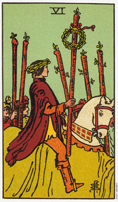

权杖六暗示着对人生充满自信的态度。
权杖六描绘一个胜利的游行，英雄头上带着花圈(在庆功会上，个人权利展现的象征)，被他的支持者所围绕着。
在这张牌中，火的乐观主义使其欲求和期望得到成功。这不是错误的乐观主义或虚无的期待，而是来自过去的成功及自信的一种真正的信仰。
在我们对自己及生命的可能性有了真正的信仰时，去完成我们想要做的事情所需要的能量及会总会得到补充。我们的成功又常能激发别人协助或跟随我们，因此在权杖六的牌里，其他人跟随着胜利的人。
权杖六计划可能会成功的一段时间，这是由于自信以及对能力的适切的管理。他表示这时候你要相信自己，并且实用个人的能力去实现、完成你的目标。正立的权杖六显示，如果你努力将会获得成功。
大体上的意义
权杖六表示工作的升迁、证实达成目标，或仅是一种自信的生活态度。尚保罗为筹凑扩展生意的资金而困扰，他问我是否那几家银行肯贷款给他。我审视了他所选的四张牌，一张代表一家银行，第三张是权杖六，我告诉他，这家银行很有可能会帮助他。他后来确定这家银行非常乐于帮助他，虽然其他两家已经接受它的贷款申请，但迟迟未决定借钱给他，所以他选择第三家银行。假如你用牌，这样的问题：“如果我尝试某某，会不会成功?”如果是出现权杖六，答案会明显的是“会”。
两性关系上的意义
在两性关系的算法中，权杖六证实你和你的伴侣有相近的目标，而且你们有可能达成这些目标。权杖六有时暗示着，你们的关系正到达另一新的阶段。例如，你们可能会结婚或住在一起，或者可能决定要有小孩。
葛雯在二次大战时住在苏格兰，她遇到一位年轻的美国空军。在他们相恋六个礼拜后，他被调返美国。她请求父亲准许她嫁给他，但被父亲拒绝，葛雯的心碎了。她近其所能的离开家去追求她自己的生活，但再没有见过她的空军男友。
她结婚后搬到澳洲组织家庭。这些年，她没有一天不思念他，尤其在离婚后，更加想念。在解读中，我清楚地看到这位空军，并建议她写信到他失去联络前的美国地址找他。
她照着做了，并且收到一封很长的回信。这位空军结过婚，也离婚了，在他们分手后每天都想念着她。他曾三次环游世界去寻找她，但没找到。
他们在重聚两个月后来看我。为了庆祝他们的复合，隔天他们就启程去环游世界，还送了我一瓶香槟以分享他们的幸福。
权杖六出现在两性关系的牌面上，表示两人因拥有共同的目标而获得成功。
倒立的权杖六
倒立的权杖六代表有恐惧或脆弱所产生的虚假的勇气与乐观，结果是，所追求的事物很少成功，或成功为时极短。
你所投入精力的每一想法和态度，将会成长并发展成具体的事物，所以，那些消极的想法、失败主义、疑心将会产生相应的事实。
在平常，倒立的权杖六表示它太快放弃。你感到压力太大或担子太重，失去对成功的期待，希望能从困难的情境中解脱。它有时是指你无法实现该属于你的成功，因为你太早放弃。
倒立的权杖六也可以表示抛弃某人或某事。它指示在一项关系或是也缺乏共同的方向，而导致分离。